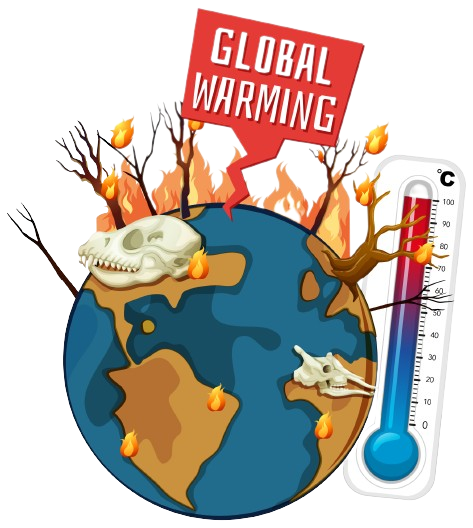

Nosso Clima
A constante mudança climática e a inercia humana.
O que são mudanças climáticas?
São as alterações no clima global que podem resultar de inferências naturais, como movimentações orbitais da Terra, ou por interfenção humana.
Enfrentamos um grande problema e este tópico é uma das prioridades estipuladas pela ONU e países apoiadores nos Objetivos de Desenvolvimento Sustentável (ODS). Ação composta por dezessete metas com o intuito de promover prosperidade e proteção para toda a vida do planeta.
Quer saber mais? Clique: aqui
Estamos levando isso a sério?
De acordo com, a página das Nações Unidas no Brasil em 2022 apenas 0,8% dos recursos foram direcionados à causa climática.
Além de não investirmos na causa, os humanos não diminuem a poluição gerada e o planeta continua a aquecer. Em uma máteria da CNN o Serviço de Mudanças Climáticas Copernicus da União Europeia informou que a temperatura média global em julho de 2023 foi cerca de 1,5°C mais quente do que a era pré industrial que terminou em meados do século XIX.
Desastres causados pela alteração climática
Buracos na Camada de Ozônio
Com a constante poluição humana por gases, como a queima de combustíveis fósseis, os buracos não se fecham mais. Acarretando na entrada dos raios ultravioletas, colaborando com o aquecimento global.
Degelo
O aumento da temperatura causa o degeloem diversas regioes como o Artico e Antártica. Provocando aumento do nível dos oceanos e a morte diversos animais, como o urso polar.
Seca
Com o aumento da temperatura, as mudanças climáticas ficam mais drásticas. Ondas de calor preocupantes, inundações e secas se intensificarão.
Onde estão os ricos nessa luta?
Em uma máteria da CNN Brasil, foi propagado um estudo publicado na revista PLOS Climate, onde afirma que os 10% norte-americanos mais ricos são causadores por aproximadamente metade da poluição que acarreta ao aquecimento global nos Estados Unidos.
"Só quando a última árvore for derrubada, o último peixe for morto e o último rio for poluído é que o homem perceberá que não pode comer dinheiro." - Provérbio indígena
